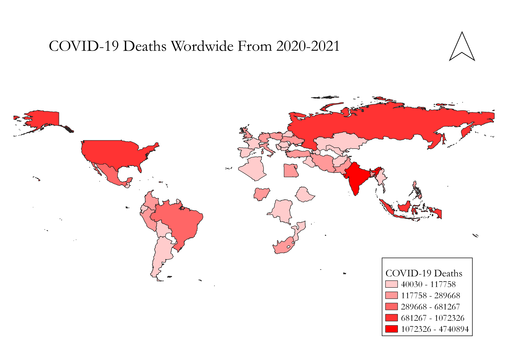

Homework 7: COVID-19 Deaths from 2020-2021
Lila Richardson
For this homework I decided to make a map visualizing COVID-16 deaths and where a majority of them took place. I wanted to do this because the mass amount of death that has accumulated because of COVID-19 as well as the location of where these have happened is extremely hard to process with our brains. I wanted to get somewhat closer to understanding the severity of this time for all of us.

Data used for this project
CSV dataset
Link to shapefile